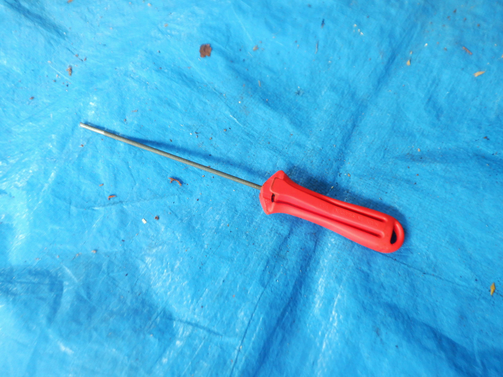

やすり

会社での呼び名
社内では「やすり」と呼びます。
2026-10-30の写真番号別回答に基づく名称。操作・使用条件の確認とは別です。赤い柄と、軸全体に細かいやすり目がある細い円柱が見えます。平刃や十字の先端は見えず、ねじを回すドライバーとは扱いません。チェーン目立て用の丸やすり候補ですが、径と適合チェーンは未確認です。
外観で名称候補を整理しています。会社での呼び名は「やすり」です。径と適合は現物で確認します。

社内では「やすり」と呼びます。
2026-10-30の写真番号別回答に基づく名称。操作・使用条件の確認とは別です。赤い柄と、軸全体に細かいやすり目がある細い円柱が見えます。平刃や十字の先端は見えず、ねじを回すドライバーとは扱いません。チェーン目立て用の丸やすり候補ですが、径と適合チェーンは未確認です。
外観で名称候補を整理しています。会社での呼び名は「やすり」です。径と適合は現物で確認します。